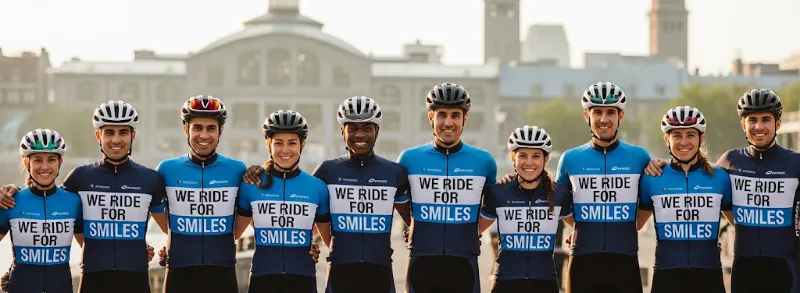
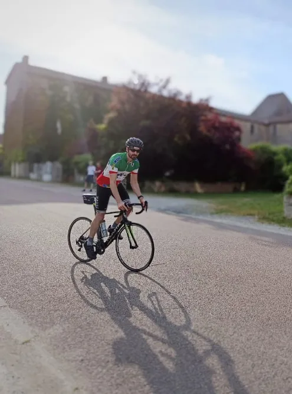

Notre mission
Apporter réconfort, espoir et soutien aux enfants malades et à leurs familles
Au cœur de notre démarche
Nous roulons pour des structures qui changent des vies : des centres hospitaliers d'excellence et des associations nationales de premier plan.
Le défi 2027 en chiffres
Rassembler.
Unir les cyclistes, bénévoles et supporters pour amplifier notre impact.
Se dépasser.
Transformer une passion commune en un mouvement de résilience.
Prendre soin de chacun.
Chaque kilomètre apporte un soutien concret aux familles face à la maladie.
Répandre la joie et l'optimisme.
Un sourire est un symbole d'espoir, rappelant qu'ils ne sont jamais seuls.
Ce défi ne se fera pas seul

J'ai lancé le projet, mais il ne pourra prendre vie qu'avec une équipe.
Cyclistes, bénévoles, partenaires, donateurs ou simples relais : chacun peut contribuer à faire avancer l'aventure. Sur la route, dans l'organisation ou à distance, chaque soutien nous rapproche du départ et nous permet d'agir pour les enfants malades et leurs familles.

Rejoindre l'aventure
Questions fréquentes
Le succès de l'événement repose sur une variété de contributions. Vous pouvez soutenir We Ride For Smiles de plusieurs façons :
- En participant au défi cycliste : Que ce soit pour le parcours intégral ou pour une ou plusieurs étapes.
- En devenant bénévole : Sur le terrain pour la logistique ou à distance pour des missions de communication, traduction ou d'organisation.
- En participant virtuellement : En roulant depuis chez vous et en participant à la collecte de fonds en ligne.
- En faisant un don : Chaque contribution financière soutient directement nos associations partenaires.
- En devenant partenaire : Associez l'image de votre entreprise à notre cause pour un impact mutuellement bénéfique.
La collecte de fonds est le cœur de notre mission. Les dons vont aux associations bénéficiaires, ce qui vous permet de soutenir la cause de manière ciblée :
Lors d'un don, vous aurez la possibilité de l'attribuer à une des associations bénéficiaires basées dans différents pays. Ce mécanisme est conçu pour permettre aux donateurs de bénéficier des avantages fiscaux en vigueur dans leur pays de résidence, sous réserve d'éligibilité. Chaque euro collecté, après déduction des frais de fonctionnement, est intégralement reversé.
Pour le défi cycliste, il n'y a ni montant minimum ni maximum de fonds à collecter. La collecte de fonds est un moyen essentiel de maximiser l'impact de notre projet pour les associations que nous soutenons, mais l'engagement est la seule condition requise. La force de l'événement est dans l'union de tous. Étant donné que le parcours se déroule sur des routes publiques, il est possible de se joindre au groupe pour une partie du trajet.
De plus, toute aide est la bienvenue. Contribuer en faisant de la communication sur le projet est un soutien tout aussi essentiel à notre mission collective d'apporter de l'espoir aux enfants malades et à leurs familles.
Le parcours est exigeant et s'adresse à des cyclistes expérimentés, capables d'enchaîner plusieurs jours de selle sur de longues distances. Au-delà de l'endurance, une autonomie technique est attendue.
Les participants doivent être en mesure d'effectuer les réparations de base (ex: crevaison, réglage mineur). Un véhicule d'assistance suivra le groupe pour la sécurité et les urgences logistiques, mais ne constitue pas une équipe de mécaniciens dédiée.
Oui, il est tout à fait possible de se joindre à nous pour une ou plusieurs étapes, en fonction de vos disponibilités. Cette flexibilité permet au plus grand nombre de contribuer à l'aventure. Nous vous invitons à nous contacter via le formulaire "S'impliquer" en indiquant les dates ou les segments du parcours qui vous intéressent.
Nous serions ravis de collaborer avec votre entreprise. Nous proposons plusieurs niveaux de partenariat (matériel, financier, logistique) offrant différentes contreparties en termes de visibilité (logo sur les maillots, le véhicule, le site web, communication dédiée sur les réseaux sociaux, etc.) en échange d'un don financier aux associations soutenues.